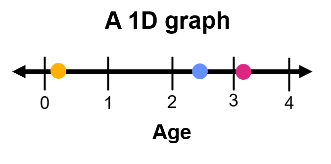
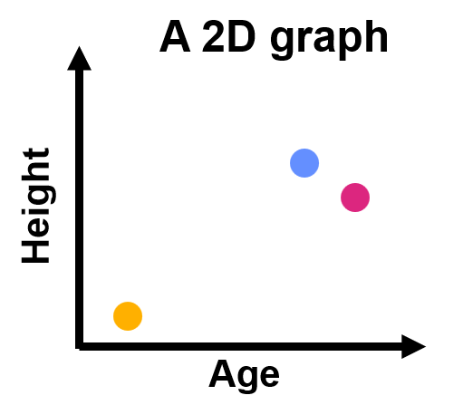
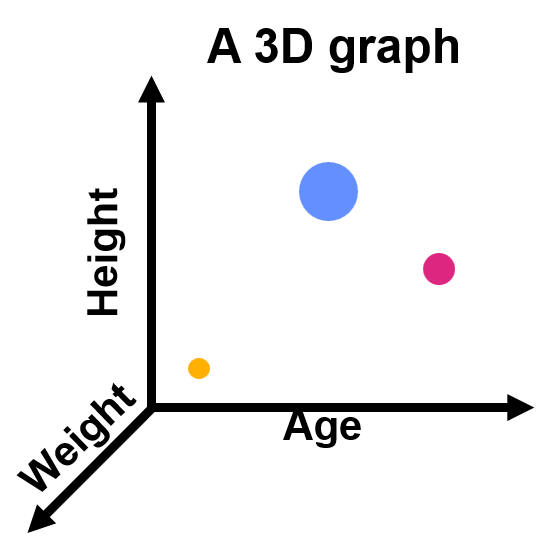

Welcome
Analyzing 16S data in Phyloseq
This tutorial will introduce you to more advanced functions in phyloseq and DESeq2 that will allow us to perform more complex analyses including alpha diversity, multidimensional scaled plots, and differential abundance. These analyses would be incredibly complex and difficult to do manually and showcase the convenience and power of R and the associated packages.
Learning Goals
- Use phyloseq to analyze and visualize 16S microbiome data.
- Use DESeq2 in phyloseq to perform differential abundance analysis.
Version: 2
Phyloseq
In this module we’ll do some more advanced analysis on our 16S data. Up until this point we have used R as a more efficient, more powerful tool compared to working in Google Sheets or Microsoft Excel. The following analyses would be exceptionally to complete without a computational tool like R.
This module will use the following packages:
- phyloseq: A library that specializes in 16S microbial community data
- ggplot2: A library that is part of the tidyverse group of packages that will allow us to create great figures
- DESeq2: A library made for performing differential expression analysis; we will be co-opting this function for a differential abundance analysis.
This module assumes that you have previously completed our “Exploring 16S data with phyloseq” module. We will be using the same data. Likewise, this tutorial assumes you have some previous exposure to working with R objects.
Alpha diversity
- Objective: Compare the biodiversity (richness and evenness) between samples/groups
- Best for questions like: How variable or stable is the microbial community over time or space?
- Example question: Does changing the diet reduce biodiversity in the human gut? Are male microbiomes more diverse than female microbiomes?
- Data format: Because we want to include rare species in our analysis, we will use our raw data, which is in counts.
We can measure the biodiversity by taking a measure of each sample’s alpha diversity (diversity within a sample) and comparing these measurements. We will use Simpson’s index to calculate alpha diversity here. Simpson’s alpha diversity measure based on the number of unique ASVs and their proportion of them within sample, taking into account which species are more dominant and which are more rare, with an emphasis on species evenness.
Note that with Simpson’s index, a HIGHER score on the scale (0-1) means a LOWER alpha diversity.

Species richness vs species evenness: Although the number of species between the two samples is the same, sample 2 has a higher species evenness, where each species is represented more equally. Bacteria art from NIAID Visual & Medical Arts (42, 57, & 179). Figure by Sayumi York (March 27, 2025).
We will do this using the plot_richness() function of phyloseq. As you can see, we can again customize the plot based on different metadata fields. If we don’t want these extra fields, we can just delete them or add a # in front of them to comment them out. We will use non-normalized data in counts (miso_counts) as recommended by McMurdie & Holmes (2014) for our alpha diversity and differential abundance analyses.
If you get a warning that contains the message: The data you have provided does not have any singletons, you may ignore this and continue.
plot_richness(miso_counts, x="subject",
color="timepointgroup",
shape="timepointgroup",
title ="fill in the blank",
measures="Simpson")Naturally, we can also subset our dataset through either subset_samples or subset_taxa and make new plots.
my_subset <- subset_samples(miso_counts, gender == "F")
plot_richness(my_subset, x="timepoint",
color="phase",
shape="timepointgroup",
title ="fill in the blank",
measures="Simpson")Multidimensional analysis
What is a multidimensional analysis?
A 1D graph: We have one dimension (age) to compare samples. Figure by Sayumi York (March 27, 2025).
What does a one-dimensional graph look like? It’s likely you use one every day although you may not think of it as a graph. Take for example, a ruler or the volume control on your computer. A one-dimensional graph simply graphs a measure of something with just one variable (ex. # of centimeters or volume measurement).
A 2D graph: We have two dimensions (age and height) to compare samples. Figure by Sayumi York (March 27, 2025).
A two-dimensional graph is probably the graph you’re most familiar with. A two-dimensional graph has an x-axis and a y-axis and it draws a relationship between the measurements on each axis to describe their relationship. For example, y = mx + b describes a linear relationship between a given x variable and its respective y variable.
A 3D graph: We have three dimensions (age, height, and weight) to compare samples. The size of the data points correlates to their z-axis. Figure by Sayumi York (March 27, 2025).
How about a three-dimensional graph? A three-dimensional graph would have a z-axis, and would add depth. Data points would be plotted in a space, like a cube sticking out from your screen (here we are imagining the larger data points are closer to us).
We hit some problems once we have a four-dimensional graph. We live in a 3-dimensional world (3D), so we would need to plot the graph on a fourth axis like time, shape, or color.
As you can imagine as we add on a fifth or sixth and beyond dimension things become even more complicated to graph and then interpret. But some experiments have more than one factor, and in genomics we often have many; one for each variable in our metadata and one for each ASV depending on what question we’re asking.
We can tackle this challenge with a PCoA.
PCoA
- Objective: Comparing how similar samples are to one another
- Best for questions like: How much variability is there within a given condition? What samples are most similar to each other?
- Example question: Are male and female samples grouped together? Do samples group together by a given metabolite? How similar are samples within each timepointgroup?
- Data format: We will use normalized counts (proportions) to be able to make comparisons between samples.
A Principal coordinates analysis (PCoA) is a multidimensional analysis that shrinks down your dimensions into groups called principal coordinates. Each principle coordinate (PC) is a collection of variables and their relationships, and the components are ordered by the amount of variation within the data set they explain. A PCoA then plots the data along two axes, each representing a PC and thus takes a multidimensional analysis and makes it so the results are visible in a 2D space!
Let’s see it in action!
Step 1: Ordinate
The first step is to create a similarity matrix between all samples through the ordinate function. Every sample is compared to every other using the Bray-Curtis distance (a statistical measure); we have stored the data in a new object called miso.pcoa.
We can look at the ordination through head(miso.pcoa) to see that something has been calculated, but the results are not that easy to understand at this point.
miso.pcoa <- ordinate(miso, method="PCoA", distance="bray")
head(miso.pcoa)Step 2: Plot PCoA
Now that we have our ordination, we use our original phyloseq object (miso) along with the ordination object (miso.pcoa) we created in the previous code block to create the graph.
Notice how we can ask R to color or change the shape of the data points based on a metadata column. And of course, we can’t forget a title!
plot_ordination(miso, miso.pcoa,
color = "subject",
shape = "phase",
title="My PCoA")The samples that are closer together are more similar in composition than samples far away from each other.
Each principal coordiate is a collection of relationships between the different variables in your dataset. Axis 1 represents principal coordinate 1, which explains 16.7% of the variance in the dataset. Likewise, Axis 2 represents principal coordinate 2, which explains 11.9% of variance in the dataset. These percentages are rather low. Generally, if the percentage is high that means there are only a handful of factors that are really driving the relationship between samples.
A PCoA is a complex analysis. It’s okay if you still don’t understand the principal coordinates themselves. Just focus on how close the samples are to each other.
Subsetting a PCoA
If we just change the field for color or shape, the PCoA plot itself won’t change - only the appearance of the data point changes. If we want to do an PCoA with a given subset of samples, we need to create that subset and repeat the ordination too. Be careful with this, since R won’t give you an error if you use the same ordination with a different phyloseq object so long as R notices the sample names match!
The following code plots an PCoA to compare the composition of all ASVs with the phylum Firmicutes.
Just like before, you can subset your phyloseq object (miso) with subset_taxa() and subset_samples() to create variations of your PCoA.
#Subset a group of interest
miso_subset <- subset_taxa(miso, Phylum == "Firmicutes")
#Ordinate based on your subset
miso.pcoa.subset <- ordinate(miso_subset, method="PCoA", distance="bray")
#Plot the new subsetted ordination with the subsetted phyloseq object
plot_ordination(miso_subset, miso.pcoa.subset,
color = "subject",
shape = "phase",
title="My subsetted (Firmicutes) PCoA")Differential abundance
- Objective: Compare the change in abundance/proportion of ASVs between groups (conditions)
- Best for questions like: What ASVs showed the most change between groups (conditions)?
- Example question: What ASVs changed the most between timepoint 1 and 2? What trends are there in the change in abundance for a given taxonomic group?
- Data format: DESeq2 will normlalize the data for us, so we will use our raw count data
Differential abundance shows us the difference in abundance of ASVs between two conditions. We will be using the library DESeq2. You can see the application of DESeq2 for differential expression in our RNA-seq modules where was also talk about how to interpret the log fold change.
For this analysis, we will be using count data; DESeq2 will take into consideration the differences in total number of reads between samples for us. In this section we will show you the different parts of the code one by one and then combine them at the end.
Step 1: Convert the phyloseq object to a DESeq2 object define an experimental design
The function phyloseq_to_deseq2 will take care of all the conversion of the data for us. What is important is that we tell DESeq2 what do with with the data.
The design field is where we put our factor of interest.
In this example, we are comparing samples between the groups of the variable timepointgroup (BD, HD, and WO). We will then call my_miso_DESeq2 to check that it is a DESeqDataSet object.
my_miso_DESeq2 <- phyloseq_to_deseq2(miso_counts, design = ~ timepointgroup)
my_miso_DESeq2Step 2: Tell DESeq2 which groups you want to compare
DESeq2 will only give you the results for one comparision at a time. For example, in the variable timepointgroup, we have to make a total of three comparisions if we wanted to make every possible comparision.
- BD vs HD
- HD vs WO
- WO vs BD
We’ll just choose the last one for now. my_comparision should be a list of strings identical to what we put in (“timepointgroup”, “WO”, “BD”)
my_comparision <-c("timepointgroup", "WO", "BD")
my_comparisionStep 3: Run the differential abundance analysis
We have created the function Differential_Abundance() for you to help skip some of the more complicated steps. As written, this function will show you all the ASVs that have a differential abundance with a p-value of 0.05 (5%) or below. If you require a different p-value, you can change the number.
We store the results in a new object called Significant_DEseq2_ASVs. To make sure it’s working we call Significant_DEseq2_ASVs to see a table of significantly differential abundance ASVs based on our chosen p-value.
Significant_DEseq2_ASVs<-Differential_Abundance(my_miso_DESeq2, my_comparision, 0.05)
Significant_DEseq2_ASVsStep 4: View the ASVs with significant differential abundance
We include calling Significant_DEseq2_ASVs as step 4. While we won’t check the output of steps 1 and 2 every time we run the code, we definitely want the table each time we run the analysis.
Significant_DEseq2_ASVsStep 5: Plot our results in a ggplot
Change the value in x = to select what goes on the x-axis and change the value in color = to change how those values are labeled. For instance, we might plot a phylum on the x-axis and then color our data points by class.
Note that this plot only uses the ASVs with a significantly different abundance between our groups. So if only see a few data points, the plot is working you just don’t have that many ASVs with significantly different abundance between the groups in the comparison you chose.
ggplot(Significant_DEseq2_ASVs, aes(x=Class, y=log2FoldChange, color=Class)) + geom_point(size=3) +
theme(axis.text.x = element_text(angle = -90, hjust = 0, vjust=0.5))The complete differential abundance code
Let’s put it all together. Try run the analysis below.
# STEP 1: Convert the phyloseq object to a DESeq2 object and tell R the experimental design
my_miso_DESeq2 <- phyloseq_to_deseq2(miso_counts, design = ~ timepointgroup)
# STEP 2: Select the groups to compare
my_comparision <-c("timepointgroup", "WO", "BD")
# STEP 3: Run the differential abundance analysis at the chosen p-value
Significant_DEseq2_ASVs<-Differential_Abundance(my_miso_DESeq2, my_comparision, 0.05)
# STEP 4: Retrieve the list of ASVs with a significant difference in abundance between the chosen groups
Significant_DEseq2_ASVs
# STEP 5: Plot the results with your chosen x axis and legend
ggplot(Significant_DEseq2_ASVs, aes(x = Phylum, y=log2FoldChange, color= Class)) + geom_point(size=3) +
theme(axis.text.x = element_text(angle = -90, hjust = 0, vjust=0.5))+
ggtitle("my title here")How do we interpret the results?
- log2FoldChange: The latter of the two conditions in our chosen variable is what DESeq2 considers the baseline. For example, the code: my_comparision <-c(“timepointgroup”, “WO”, “BD”), sets the baseline as BD. Thus, any positive number represents a greater abundance in the former (“WO”) condition compared to the latter (“BD”). The larger the magnitude of the number, the greater the difference in abundance.
- p-value: The base p-value, without corrections for multiple comparisons.
- p-adj: The p-value after correcting for multiple comparisions. You should use p-adj when reporting your results.
In this example, ASV245 has a negative log2FoldChange. Since our baseline condition is BD, that means there is a lower abundance of ASV245 in the WO condition. Likewise, ASV1114 has a positive log2FoldChange, so ASV1114 has an increased abundance in the WO condition. Finally, the magnitude of ASV245 is greater than the magnitude of ASV1114. Thus, ASV245 has a larger difference in abundance between BD and WO conditions than ASV1114 does.
To change the comparision, if we are using the same factor, we only need to change the code in Step 2. Change the code below and swap out “WO” for “HD” so that we can compare the “HD” to the “BD” (baseline) group.
# STEP 1: Convert the phyloseq object to a DESeq2 object and tell R the experimental design
my_miso_DESeq2 <- phyloseq_to_deseq2(miso_counts, design = ~ timepointgroup)
# STEP 2: Select the groups to compare
my_comparision <-c("timepointgroup", "WO", "BD")
# STEP 3: Run the differential abundance analysis at the chosen p-value
Significant_DEseq2_ASVs<-Differential_Abundance(my_miso_DESeq2, my_comparision, 0.05)
# STEP 4: Retrieve the list of ASVs with a significant difference in abundance between the chosen groups
Significant_DEseq2_ASVs
# STEP 5: Plot the results with your chosen x axis and legend
ggplot(Significant_DEseq2_ASVs, aes(x = Phylum, y=log2FoldChange, color= Class)) + geom_point(size=3) +
theme(axis.text.x = element_text(angle = -90, hjust = 0, vjust=0.5))+
ggtitle("my title here")If we want to change the factor we are looking at (example: from timepointgroup to subject) we will have to change the design code in Step 1 as well. In step 1 change timepointgroup to subject.
Then of course, step 2 needs to match. In step 2 change timepointgroup to subject.
Finally, we need to choose two variables within the factor subject to compare. Let’s choose S02 and subject S03. In step 2 replace “WO” with “S02”. Then replace “BD” with “S03”.
# STEP 1: Convert the phyloseq object to a DESeq2 object and tell R the experimental design
my_miso_DESeq2 <- phyloseq_to_deseq2(miso_counts, design = ~ timepointgroup)
# STEP 2: Select the groups to compare
my_comparision <-c("timepointgroup", "WO", "BD")
# STEP 3: Run the differential abundance analysis at the chosen p-value
Significant_DEseq2_ASVs<-Differential_Abundance(my_miso_DESeq2, my_comparision, 0.05)
# STEP 4: Retrieve the list of ASVs with a significant difference in abundance between the chosen groups
Significant_DEseq2_ASVs
# STEP 5: Plot the results with your chosen x axis and legend
ggplot(Significant_DEseq2_ASVs, aes(x = Phylum, y=log2FoldChange, color= Class)) + geom_point(size=3) +
theme(axis.text.x = element_text(angle = -90, hjust = 0, vjust=0.5))+
ggtitle("my title here")Template code
PCoA
#Subset a group of interest
miso_subset <- subset_taxa(miso, Phylum == "Firmicutes")
#Ordinate based on your subset
miso.pcoa.subset <- ordinate(miso, method="PCoA", distance="bray")
#Plot the new subsetted ordination with the subsetted phyloseq object
plot_ordination(miso_subset, miso.pcoa.subset,
color = "subject",
shape = "phase",
title="My subsetted (Firmicutes) PCoA")Alpha Diversity
my_subset <- subset_samples(miso_counts, gender == "F")
plot_richness(my_subset, x="timepoint",
color="phase",
shape="timepointgroup",
title ="fill in the blank",
measures= "Simpson")Differential abundance
# STEP 1: Convert the phyloseq object to a DESeq2 object and tell R the experimental design
my_miso_DESeq2 <- phyloseq_to_deseq2(miso_counts, design = ~ timepointgroup)
# STEP 2: Select the groups to compare
my_comparision <-c("timepointgroup", "WO", "HD")
# STEP 3: Run the differential abundance analysis at the chosen p-value
Significant_DEseq2_ASVs<-Differential_Abundance(my_miso_DESeq2, my_comparision, 0.05)
# STEP 4: Retrieve the list of ASVs with a significant difference in abundance between the chosen groups
Significant_DEseq2_ASVs
# STEP 5: Plot the results with your chosen x axis and legend
ggplot(Significant_DEseq2_ASVs, aes(x = Phylum, y=log2FoldChange, color= Class)) + geom_point(size=3) +
theme(axis.text.x = element_text(angle = -90, hjust = 0, vjust=0.5))+
ggtitle("my title here")Advanced
- Add ellipsis CI @ 95%
- R formulas in DESeq2 (ex. interaction terms)
Summary
FAQ
Common errors
No significant genes found No datapoint on the DESeq2 graph - missing
NA? Warning: Removed 3 rows containing missing values or values outside
the scale range (geom_point()).
Works cited
Aden-Buie G, Schloerke B, Allaire J, Rossell Hayes A (2023). learnr: Interactive Tutorials for R. https://rstudio.github.io/learnr/, https://github.com/rstudio/learnr
Evans, Ciaran, Johanna Hardin, and Daniel M. Stoebel. “Selecting between-sample RNA-Seq normalization methods from the perspective of their assumptions.” Briefings in bioinformatics 19.5 (2018): 776-792.
Guthrie, Leah, et al. “Impact of a 7-day homogeneous diet on interpersonal variation in human gut microbiomes and metabolomes.” Cell host & microbe 30.6 (2022): 863-874.
McMurdie, Paul J., and Susan Holmes. “phyloseq: an R package for reproducible interactive analysis and graphics of microbiome census data.” PloS one 8.4 (2013): e61217.
McMurdie, Paul J., and Susan Holmes. “Waste not, want not: why rarefying microbiome data is inadmissible.” PLoS computational biology 10.4 (2014): e1003531.
NIAID Visual & Medical Arts. (10/7/2024). Bacillus Bacteria. NIAID NIH BIOART Source. bioart.niaid.nih.gov/bioart/42
NIAID Visual & Medical Arts. (10/7/2024). Borrelia. NIAID NIH BIOART Source. bioart.niaid.nih.gov/bioart/57
NIAID Visual & Medical Arts. (10/7/2024). Gram Negative Bacteria. NIAID NIH BIOART Source. bioart.niaid.nih.gov/bioart/179
R Core Team (2024). R: A Language and Environment for Statistical Computing. R Foundation for Statistical Computing, Vienna, Austria. https://www.R-project.org/.
Stoudt, Sara, Anthony D. Scotina, and Karsten Luebke. “Supporting Statistics and Data Science Education with learnr.” Technology Innovations in Statistics Education 14.1 (2022).
Wickham, Hadley. “ggplot2.” Wiley interdisciplinary reviews: computational statistics 3.2 (2011): 180-185.